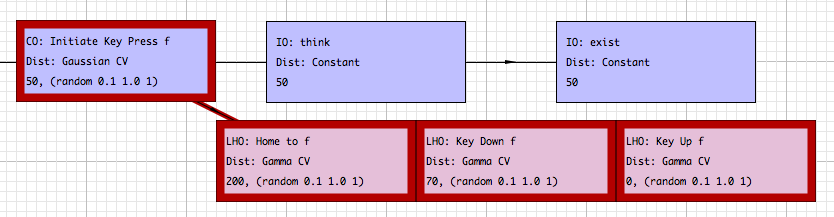

Chapter 1
Using Interactive Routines
Often through the course of building CPM-GOMS models, modelers will recognize recurring patterns of activities corresponding to common interactions required to complete a task. These generalizable sequences are refered to as templates or interactive routines. SANLab-CM provides a number of such routines to help simplify the construction of CPM-GOMS models.
To instantiate an interactive routine, locate the desired routine in the lower section of the toolbox. Drag the interactive routine from the toolbox onto the model editor. A dialog will appear asking you for identifying information. SANLab-CM will append the supplied string with any information in the interactive routine to generate a label for each activity. For example, if one instantiates the Key Press (Left Hand) routine, one may want to specify the key that is being pressed by the left hand.

Figure 1. Interactive routine placement (above) and instantiation (below)
The editor will then display a phantom image of the interactive routine. This routine will follow the mouse, making it easier to see where the routine will be placed and how much space it will take up. Once the routine is appropriately positioned, clicking the mouse button causes SANLab-CM to generate all of the routines and their connections. The set of activities which make up the interactive routine are color-coded by routine in both the model editor and the model overview window for easy identification. Each activity in the routine can be moved, edited, and connected to the rest of the model as needed to build the model. SANLab-CM also supports creation of new interactive routines, which will be discussed in Chapter 2.